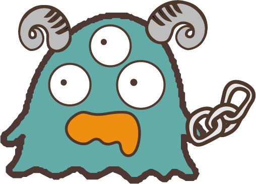

NTPU elves
warm your heart
你是哪種聖誕可愛鬼?
你的聖誕可愛鬼是......克里希克拉赫!😈

-----------------------------------------
來自中歐的傳說，每次都被聖誕老人搶盡風頭，所以總喜歡跟聖誕老人作對。
是個長著山羊角和鐵鏈的惡魔，天生有著反骨的性格，討厭小孩的哭聲，不過遇到小孩還被壞人欺負時總是會挺身而出。
-----------------------------------------
與你合得來的聖誕可愛鬼有......來自德國農場的聖誕樹、聖誕小妖精、夢遊小魔
點選文字看看你的可愛好朋友是誰!